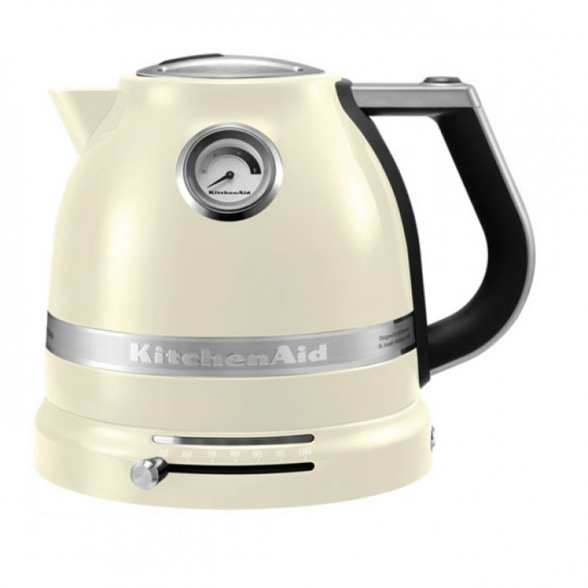

Чайник BORK K780 VS KitchenAid 5KEK1522
Современная техника отличается от ретро тем, что экономит самое ценное на сегодняшний день – время. Ретро дизайн - это на любителя, а вот ретро технологии это вчерашний, а быть может и позавчерашний день. Покупая KitchenAid, вы покупаете не только ретро дизайн, но и ретро технологии.
KitchenAid 5KEK1522
Преимущества KitchenAid, которые пытаются продать:
- Дизайн и выбор цветов
- Срок гарантии 3 года
- Компания, которая изобрела миксеры в 1919 году
- KitchenAid переводится, как кухонный помощник
-
Двойные стенки корпуса, снижают уровень шума и нагрев корпуса*
Примечание: Цельнометаллическая колба чайника Artisan Pro Line, с внутренней стороны покрыта синтетическим материалом. При открывании крышки чайника, ощущается характерный запах
Характеристики KitchenAid:
- Потребляемая мощность: 2400 Вт
- Объём л.: 1,5 л
- Регулируемая температура от 50°C до 100°C, с подсветкой шкалы выбора температуры
- Термоиндикатор с отображением температуры даже без подставки
- Удобная нескользящая ручка
- Окошко для контроля уровня воды с подсветкой
- Съемный фильтр для накипи
- База с поворотом 360°
Преимущества чайника BORK K780:
- Выдающийся дизайн чайника BORK K780, удостоен награды IF DESIGN AWARD
- Современный тип управления (LCD дисплей, запатентованные звуковые сигналы, русскоязычное меню с 5 автоматическими режимами, гарантирующими идеальную температуру для каждого чая, on-line отображение температуры воды)
- Инновационный сенсорный датчик выключения питания, находится в нагревательном элементе. Эта технология позволит отключиться чайнику при наборе необходимой температуры, даже при открытой крышке. Что делает его использование безопасным
- Уникальная технология Boil First. Данная функция позволяет предварительно вскипятить воду, а после довести ее до нужной температуры для выбранного сорта чая или кофе
- Функция Keep Warm. Поддержание температуры в течении 10 минут
- Экологичность. Корпус изящного чайника изготовлен из немецкого термостойкого стекла Schott Duran, не содержащего примеси и посторонние компоненты
- Объём 0,5 л. - 1,7 л. Идеальное решение, как для одного пользователя, так и для большой компании
- Эргономическая ручка, изготовленная из анодированного алюминия и soft покрытия, обеспечивает удобное использование. Ручка крепится к стеклянному графину без единого шурупа
- Реальная цена, отличного продукта
Покупая KitchenAid, вы покупаете не только ретро дизайн, но и ретро технологии.